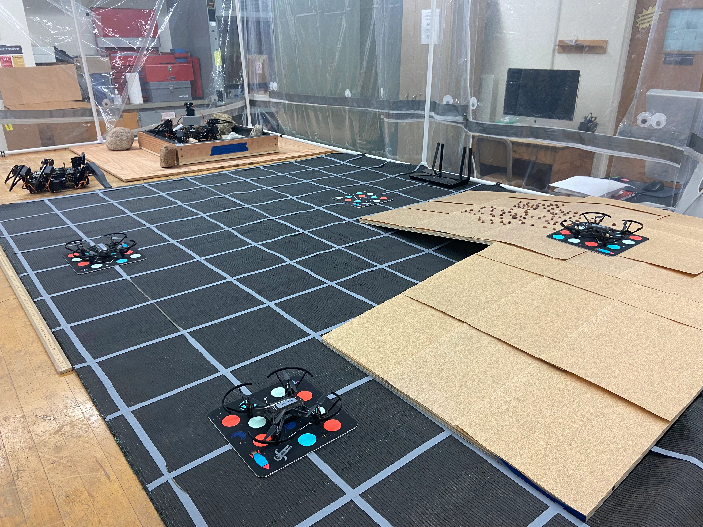
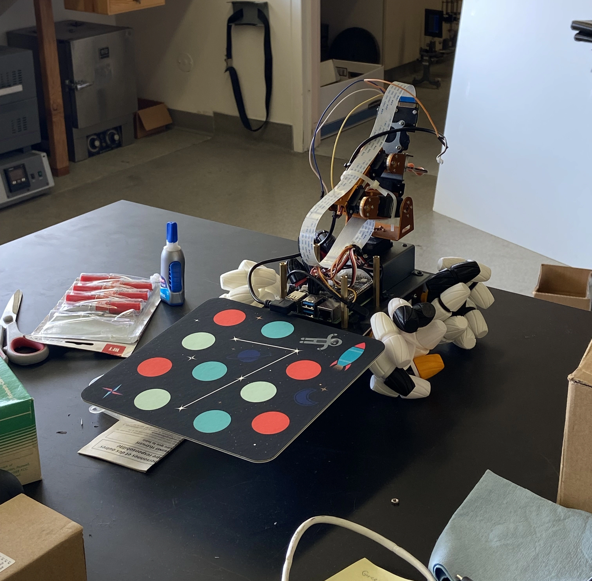
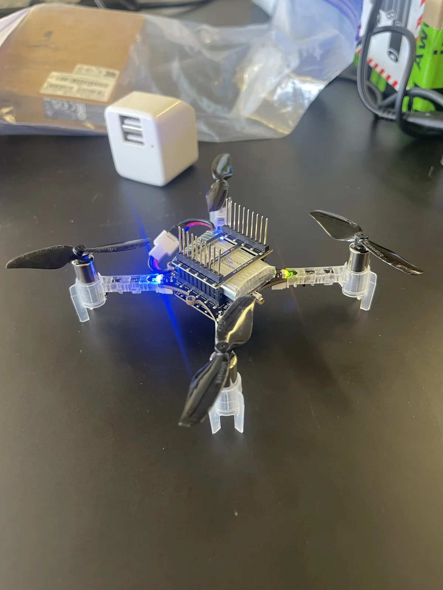
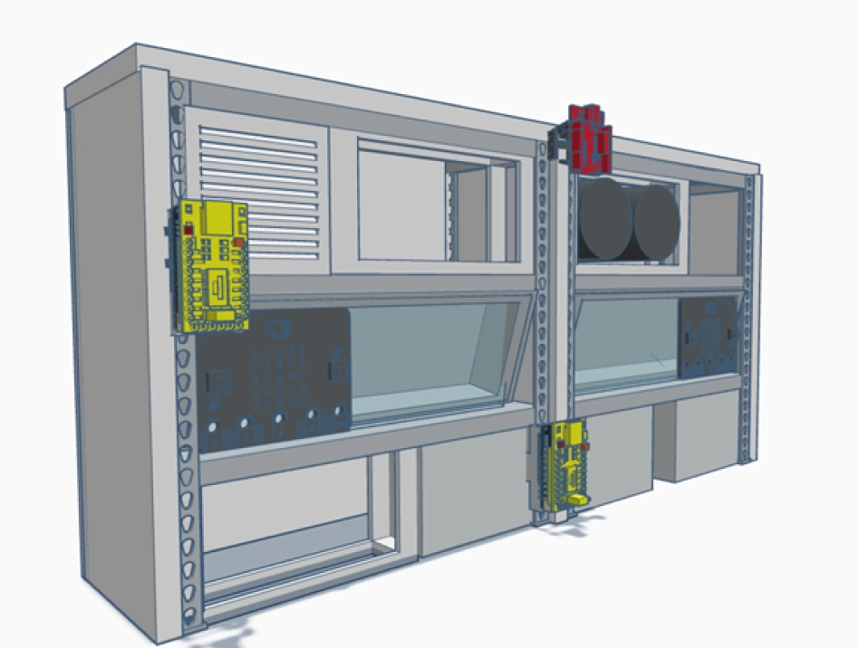
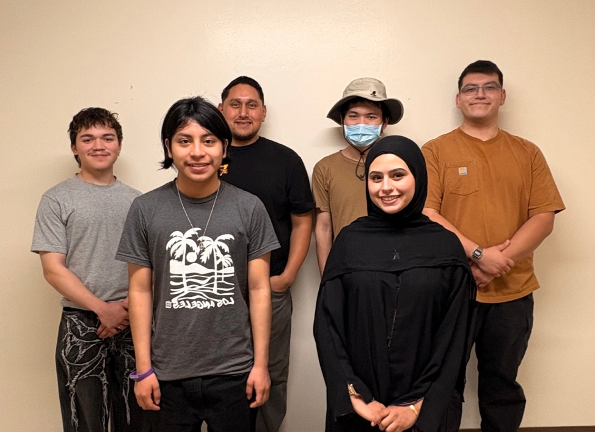
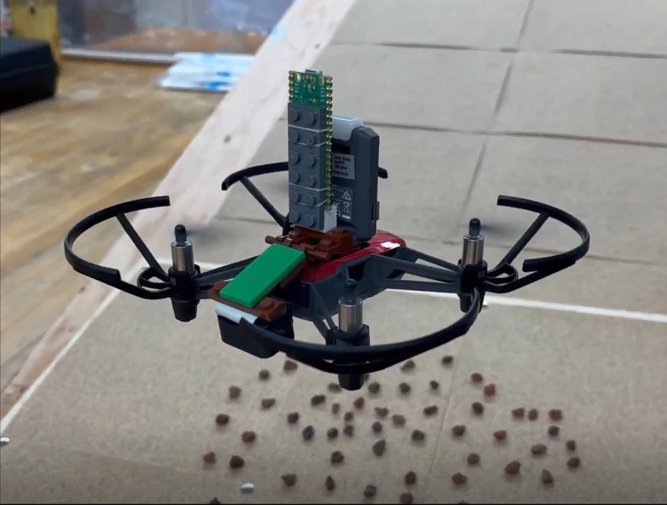
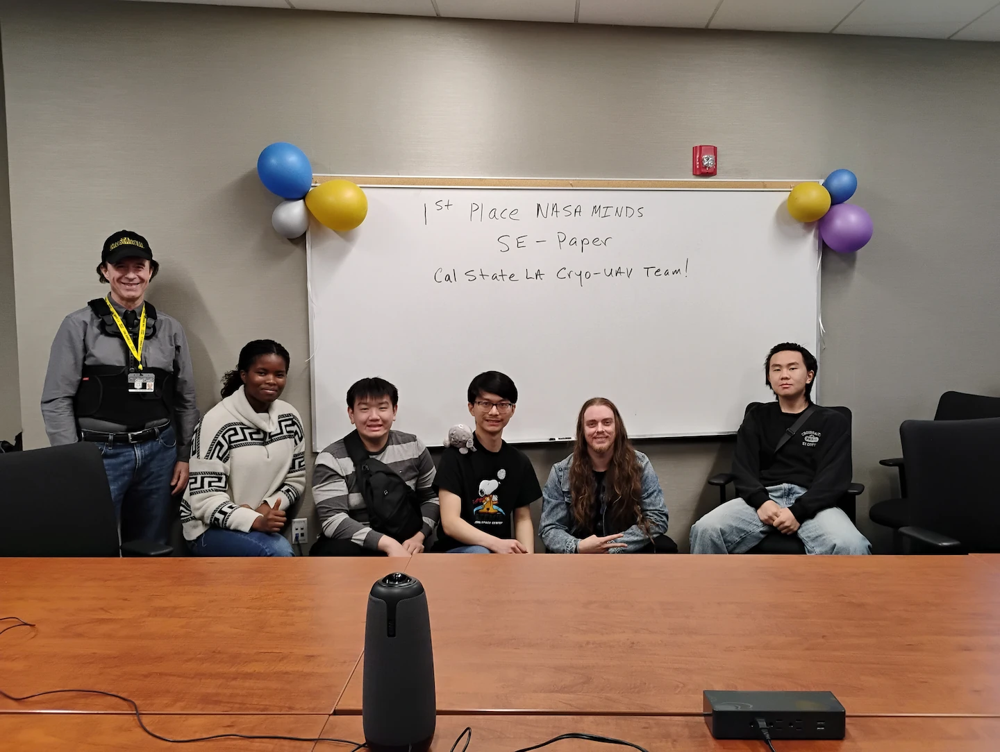

NASA ORBIT Competition
Active · 2026NASA's ORBIT Challenge is a multi-phase student competition designed to inspire the next generation of engineers and researchers. Teams compete for prizes, receive mentorship from NASA experts, and present their work at an in-person showcase. ICSRC enters two sub-teams that develop distinct robotic platforms for navigating and mapping simulated lunar environments.

Tello EDU drone swarm preparing to take off from the Lunar Geology Lab - Flight Enclosure in a synchronized flight formation
Mission Goals
- Cryo-Bot Team: Develop autonomous swarm of rovers to navigate the lunar environment and map critical resources.
- Cryo UAV Team: Develop cold-gas thruster drone swarm to search for water-ice in permanently shaded regions of the Moon.

Crazyflie Flight and Sensor Development
The Cryo-UAV team uses the Crazyflie 2.1+ to test flight and sensors inside the Lunar Geology Lab Flight Enclosure. We assembled the drone, added a Flow deck for stable indoor flight, and created programmed flight paths. We also connected an Xbox controller and manually flew the drone through our lunar maze.
In 2026, we added the Multi-ranger deck. Its sensors measure the distance to nearby objects in five directions. We then adapted an open-source viewer to turn the recorded sensor readings into the interactive 3D point cloud below. The program also shows the battery level and flight status, and saves data for later study.
We are using this work to develop obstacle avoidance and environmental mapping. It is an important step toward autonomous navigation and SLAM, where a drone builds a map while determining its location.

NASA Human Lander Challenge (HuLC)
Active · 2026The Human Lander Challenge is a collegiate competition administered by the National Institute of Aerospace. Teams develop innovative systems-level solutions that improve Environmental Control and Life Support System performance for long-duration spaceflight toward the Moon and Mars. ICSRC's Cryo-Sense team works to reduce the mass and power requirements of hardware health monitoring systems for the Human Landing System.

Diagram of Rack-Mountable Sensor Packages (in Yellow) which will be distributed throughout the Human Landing System cabin
Mission Goal

- Cryo-Sense Team: Integrate Sony Spresense hardware and Edge AI sensor fusion to improve the mass and power efficiencies of the Environmental Control and Life Support Systems for the Human Landing Systems.
NASA MINDS Competition
2023 – 2025NASA MINDS (MUREP Innovative New Designs for Space) is a multi-semester competition for undergraduate teams at Minority Serving Institutions. Teams select a NASA technology opportunity tied to the Artemis mission and develop a detailed design concept. ICSRC has competed since 2023 and has earned top finishes in both the Systems Engineering paper and team champion categories.


Achievements
- 1st Place - Cryo-UAV Systems Engineering Paper - Senior Division (2023, 2025)
- 3rd Place - Cryo-Swarm UAV Team Champion - Senior Division (2023)
- 4th Place - Cryo-Spyderbot Team Champion - Senior Division (2023)
- Competition Finalist - Cryo-UAV Team - Senior Division (2023, 2025)
- Competition Finalist - Cryo-Spyderbot Team - Senior Division (2023, 2024, 2025)